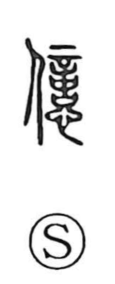

億

Uncategorized
Kun: | On: oku
hundred million ・ to think ・ to fathom ・ to guess
Explanation
億 is a phonetic compound that takes 意 as its phonetic core, a pattern it shares with 臆. Shirakawa explains 意 as formed from 音 “sound” and 心 “heart,” expressing how the gods give a faint sound in response to prayer—a divine message that the heart must interpret. Thus 意 denotes the act of hearing, weighing, and pondering the will of the gods. In earlier usage, 意 itself could stand for the senses later written with 億 and 憶 (“to think; to fathom”). Over time, 億 shifted away from that sphere of thought and conjecture and came to serve as a numerical term meaning “a hundred million.”